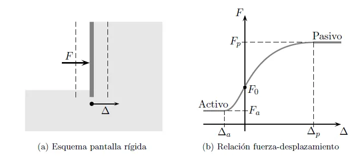
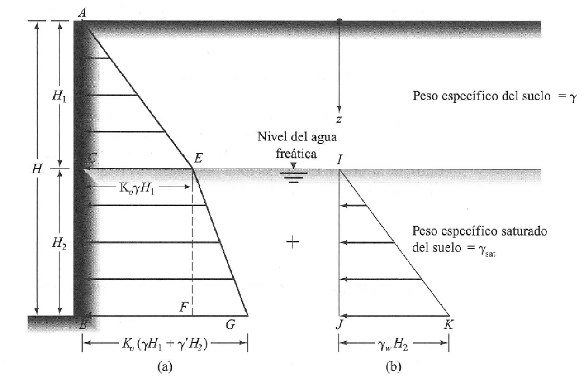
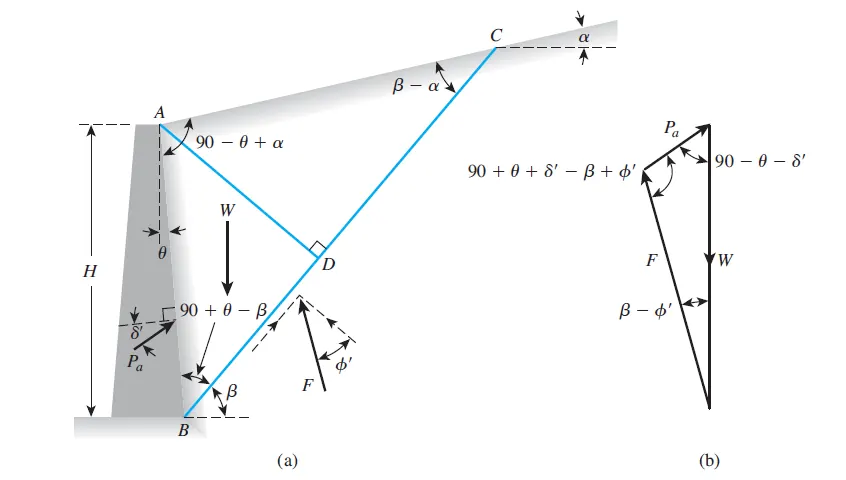
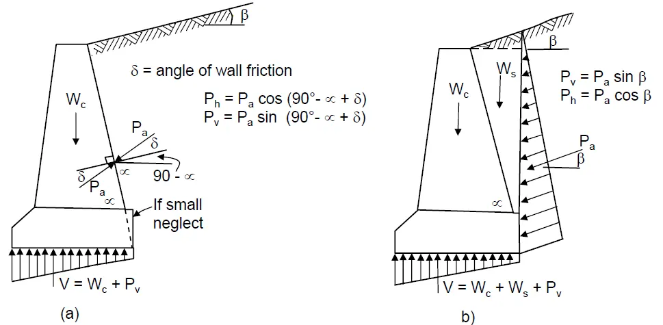

Empujes de tierras y muros de contención#
Importante
Objetivos de aprendizaje
Reconocer los tipos de estructuras de contención y las fuerzas que actúan sobre ellas.
Diferenciar los estados de empuje en reposo, activo y pasivo.
Calcular los empujes con las teorías de Rankine y de Coulomb, incluyendo el agua, las sobrecargas y la cohesión.
Verificar la estabilidad de un muro de gravedad al deslizamiento, al volcamiento y por capacidad portante.
Estructuras de contención#
Un muro de contención es una estructura que da soporte lateral a un talud de suelo vertical o casi vertical. Los muros de gravedad, de concreto simple o ciclópeo y gran espesor, resisten los empujes con su propio peso. Los muros en voladizo, de concreto reforzado, aprovechan el peso del relleno sobre el talón con el mismo propósito. En ambos se distinguen el vástago, el espaldón (la cara en contacto con el relleno), la pata y el talón. Los muros encribados son armazones de vigas entrelazadas rellenos de material granular, y los muros de gaviones son cajas de malla metálica, generalmente de 1 × 1 × 2 m, llenas de roca. Los muros de tierra armada o reforzada estabilizan el relleno compactado con refuerzos horizontales, metálicos o geosintéticos. Las tablestacas son láminas entrelazadas hincadas en el suelo, que pueden trabajar en voladizo, ancladas o apuntaladas. Los muros pantalla se funden en el sitio en zanjas estabilizadas con lodo bentonítico antes de excavar, lo que minimiza el movimiento del terreno en excavaciones urbanas.

Figura 68 Empuje lateral de tierras sobre una estructura de contención.#
Sobre un muro actúan su peso propio, el empuje del relleno contra el espaldón, las componentes normal y tangencial de la reacción de la cimentación, el empuje pasivo del suelo frente a la pata, las sobrecargas sobre el relleno, las presiones y fuerzas de filtración del agua, los impactos y las fuerzas sísmicas.
Estados de empuje#
El empuje que ejerce el suelo depende del movimiento de la estructura. Si el muro no se mueve, el suelo permanece en reposo y el esfuerzo horizontal es \(\sigma'_h=K_0\,\sigma'_v\). Si el muro se aleja del relleno, el suelo se expande lateralmente, el esfuerzo horizontal disminuye y, con un pequeño desplazamiento, alcanza el estado de falla activo, con un coeficiente \(K_a<K_0\). Si el muro empuja contra el suelo, el esfuerzo horizontal aumenta hasta el estado pasivo, con \(K_p>K_0\), que requiere desplazamientos mucho mayores para movilizarse.


Figura 69 Variación del empuje con el desplazamiento del muro: estados en reposo, activo y pasivo.#
El coeficiente en reposo de arenas y arcillas normalmente consolidadas se estima con la fórmula de Jaky (1944), \(K_0=1-\sin\phi'\). En suelos sobreconsolidados aumenta con la razón de sobreconsolidación, según Mayne y Kulhawy (1982): \(K_0=(1-\sin\phi')\,OCR^{\sin\phi'}\).
Teoría de Rankine#
Rankine (1857) analizó el equilibrio plástico de una masa semi-infinita de suelo con superficie horizontal, suponiendo que el suelo es homogéneo e isotrópico, que la superficie de falla es plana, que el espaldón del muro es vertical y que no hay fricción entre el suelo y el muro.
En el estado en reposo, el círculo de Mohr de un elemento está por debajo de la envolvente de falla. Si el suelo se distiende horizontalmente, \(\sigma'_h\) disminuye mientras \(\sigma'_v\) permanece constante, hasta que el círculo toca la envolvente: es el estado activo de Rankine. Si el suelo se comprime lateralmente, \(\sigma'_h\) aumenta hasta superar a \(\sigma'_v\) y el círculo vuelve a tocar la envolvente: es el estado pasivo. De la geometría del círculo tangente se obtienen los coeficientes:
Los planos de falla forman ángulos de \(45°+\phi'/2\) con la horizontal en el estado activo y de \(45°-\phi'/2\) en el pasivo. Los esfuerzos horizontales, para un suelo con cohesión, son:
Para un relleno granular seco de altura \(H\), la distribución es triangular y el empuje total por metro de muro es
aplicado a \(H/3\) desde la base.
Efecto del agua y de las sobrecargas#
El agua tiene un efecto importante porque su empuje no se reduce por ningún coeficiente: la presión de poros actúa con \(K=1\). Bajo el nivel freático, el empuje se calcula sumando el empuje efectivo del suelo, con \(\gamma'\), y la presión hidrostática. Por eso es fundamental drenar el relleno de los muros: muchas fallas de muros se deben a la falta o a la obstrucción de los drenajes. Una sobrecarga uniforme \(q\) sobre el relleno añade un esfuerzo horizontal constante \(K_a\,q\) en toda la altura.


Figura 70 Efecto del nivel freático en la distribución de empujes.#
Suelos cohesivos#
En una arcilla saturada cargada rápidamente (\(\phi_u=0\)), el esfuerzo activo total es \(\sigma_{ha}=\gamma z-2c_u\), que resulta negativo cerca de la superficie. Como el suelo no resiste tensión, se forman grietas hasta la profundidad \(h_0=2c_u/\gamma\), que pueden llenarse de agua. El empuje activo total, despreciando la zona de tensión, es \(P_a=\tfrac12(\gamma H-2c_u)(H-h_0)\). En el estado pasivo, \(\sigma_{hp}=\gamma z+2c_u\).
Ejemplo resuelto: empuje de Rankine con nivel freático
Un muro de 6 m retiene un relleno de arena con \(\phi'=30°\), \(\gamma=18\) kN/m³ sobre el nivel freático y \(\gamma_{sat}=20\) kN/m³ por debajo. Calcule el empuje activo total (a) con el relleno seco y (b) con el nivel freático a 3 m de profundidad.
\(K_a=(1-\sin30°)/(1+\sin30°)=1/3\).
(a) Seco: \(P_a=\tfrac12(1/3)(18)(6^2)=108\) kN/m, aplicado a 2 m de la base.
(b) Con nivel freático a 3 m:
A 3 m: \(\sigma'_{ha}=(1/3)(18)(3)=18\) kPa.
A 6 m: \(\sigma'_{ha}=18+(1/3)(20-9{,}81)(3)=28{,}2\) kPa, y la presión del agua es \(u=9{,}81\times3=29{,}4\) kPa.
Empuje del suelo: \(\tfrac12(18)(3)+18(3)+\tfrac12(28{,}2-18)(3)=27+54+15{,}3=96{,}3\) kN/m.
Empuje del agua: \(\tfrac12(29{,}4)(3)=44{,}1\) kN/m.
Total: \(P_a=140{,}4\) kN/m, un 30 % mayor que en el relleno seco. Un drenaje adecuado elimina el empuje del agua.
Teoría de Coulomb#
Coulomb (1776) analizó el equilibrio de una cuña de suelo que desliza sobre un plano que pasa por el pie del muro. Supone un material seco, homogéneo, isotrópico y sin cohesión; que la cuña actúa como un cuerpo rígido; que la superficie de falla es plana; y que el empuje actúa a un tercio de la altura con una inclinación igual al ángulo de fricción entre el suelo y el muro, \(\delta'\). La ventaja sobre Rankine es que considera la fricción en el espaldón, su inclinación \(\beta\) y la inclinación del relleno \(\alpha\):
Con espaldón vertical (\(\beta=90°\)), relleno horizontal (\(\alpha=0\)) y sin fricción (\(\delta'=0\)), la expresión coincide con la de Rankine. Para el empuje pasivo, la teoría de Coulomb con superficies planas sobrestima la resistencia cuando \(\delta'>\phi'/2\), por lo que se prefieren soluciones con superficies curvas.


Figura 71 Cuña de Coulomb para el empuje activo.#
Estabilidad de muros de contención#
El diseño de un muro sigue un proceso iterativo: se predimensiona con proporciones típicas, se analiza su estabilidad y, si no cumple, se redimensiona. Un muro de gravedad debe ser estable contra el deslizamiento a lo largo de la base, el volcamiento alrededor de la pata, la falla por capacidad portante bajo la pata y la falla externa o global, a lo largo de una superficie que envuelve al muro y al relleno.


Figura 72 Fuerzas que actúan sobre un muro de contención.#
Deslizamiento. El factor de seguridad compara las fuerzas resistentes en la base con la componente horizontal del empuje activo:
donde \(N'=N-U\) es la fuerza normal efectiva en la base. Se exige 2,0 si se cuenta con la resistencia pasiva frente a la pata y 1,5 si se ignora, porque el empuje pasivo requiere desplazamientos grandes para movilizarse y el suelo frente al muro puede ser removido por erosión o excavaciones.
Volcamiento. Se comparan los momentos resistentes y actuantes respecto a la pata:
Capacidad portante. La resultante \(N\) debe caer en el tercio central de la base, con excentricidad \(e=B/2-(\sum M_R-\sum M_O)/N\le B/6\), para que toda la base permanezca en compresión. Las presiones extremas son
y la máxima, que ocurre bajo la pata, no debe superar la capacidad portante admisible del suelo (capítulo Cimentaciones).
Falla global. Se analiza con los métodos de estabilidad de taludes del capítulo Estabilidad de laderas y taludes. En laderas es con frecuencia el mecanismo crítico: un muro bien dimensionado contra el deslizamiento y el volcamiento puede ser arrastrado por un movimiento en masa que pasa por debajo de su cimentación. Evaluar esta posibilidad requiere conocer el modelo geológico de la ladera y no solo el del relleno.
Lecturas recomendadas#
Das [2001], capítulo 11.
Das [1999], capítulos 7 y 8.
Título H de la NSR-10 [Asociación Colombiana de Ingeniería Sísmica, 2010], capítulo H.6.
Ejercicios#
Calcule el empuje pasivo de Rankine frente a la pata de un muro, en una profundidad de 1,5 m de una arcilla con \(c'=10\) kPa, \(\phi'=25°\) y \(\gamma=18\) kN/m³.
Para un muro de gravedad de 6,5 m de altura con espaldón inclinado, calcule el coeficiente de Coulomb con \(\phi'=32°\), \(\delta'=2\phi'/3\), \(\beta=80°\) y \(\alpha=10°\), y compárelo con el de Rankine.
Un muro en una ladera de coluvión cumple todas las verificaciones locales y, sin embargo, falla. Proponga tres mecanismos geológicos que lo expliquen.